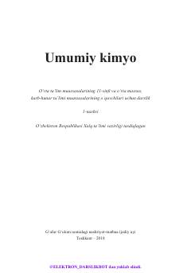

UK11-sinf o'quvchilari uchun umumiy kimyo fanidan rasmiy darslik.
Ushbu darslik umumta'lim maktablarining 11-sinf o'quvchilari uchun mo'ljallangan bo'lib, umumiy kimyoning asosiy nazariyalari, atom va molekulalarning tuzilishi hamda davriy qonunlarni o'z ichiga oladi. Kitobda har bir mavzu nazariy tushuntirishlar, masala va mashqlar bilan mustahkamlangan holda berilgan.